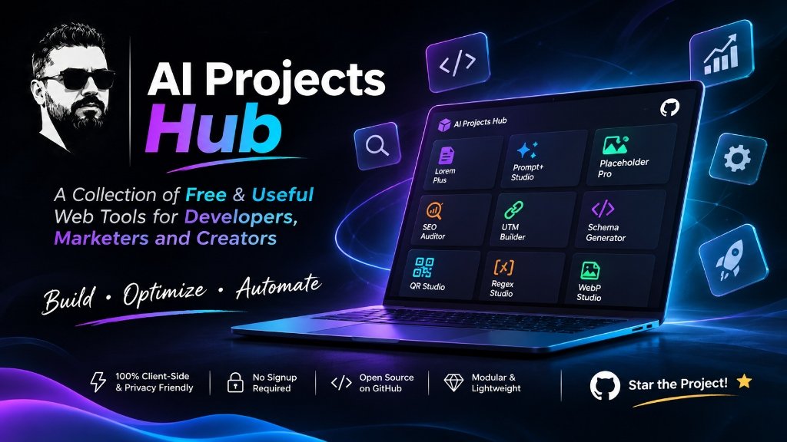

مجموعهای از میکرواپهای آنلاین و ماژولار جهت ارتقای تولید محتوا، مهندسی پرامپت، و طراحی داراییهای گرافیکی؛ بدون وابستگیهای سنگین و آماده بهرهبرداری.
ارزشآفرینی از طریق ترکیب هوش مصنوعی مولد و مهندسی خلاق وب
ابزارهای ما گلوگاههای واقعی طراحان و مدیران سایتها از جمله تولید دادههای تستی فارسی، ساخت سریع تصاویر پیشنمایش و بهینهسازی پرامپتها را حل میکنند.
توسعه به روش Clean Modular Web؛ سورسکدهای شفاف، کامپوننتهای مستقل، بدون فریمورکهای سنگین، با نهایت سرعت لود و استاندارد سئو و دسترسیپذیری.
تمام ابزارها ۱۰۰٪ سمت کلاینت و کلاود اجرا میشوند. بدون نیاز به ثبتنام یا اشتراک پولی، میتوانید فوراً نتایج را کپی، دانلود یا خروجی بگیرید.
پاسخ به سوالات متداول درباره ابزارها و نحوه توسعه آنها
توسعهدهنده نرمافزار با علاقه عمیق به تلفیق مهندسی مدرن وب و هوش مصنوعی مولد. تمرکز من بر خلق راهحلهای سریع، کاربرپسند و نوآورانه است که فرآیندهای فنی را سادهتر کرده و ابزارهای ملموس و کارآمد به جامعه وب ارائه دهند.

تمامی این میکرواپها ۱۰۰٪ رایگان، بدون تبلیغات و با عشق برای ارتقای جامعه وب فارسی توسعه داده میشوند. اگر ابزارهای این هاب در کار، تولید محتوا یا پروژههات بهت کمک کردند، با دادن یک Star در گیتهاب یا همراهی در لینکدین، بزرگترین انگیزه و انرژی رو برای ساخت ابزارهای جدیدتر به من میدی! ❤️